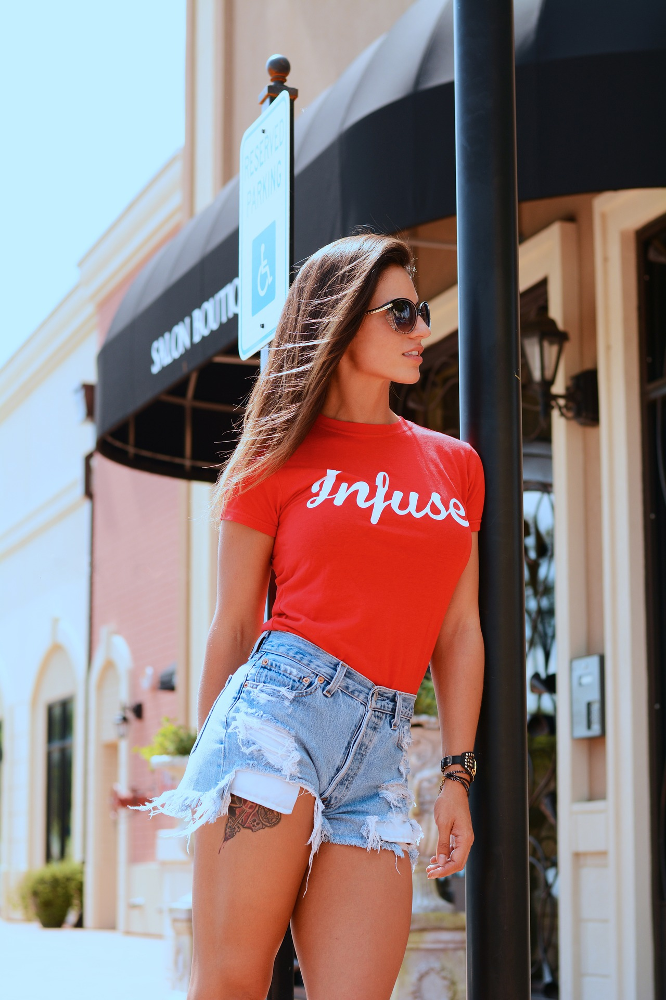
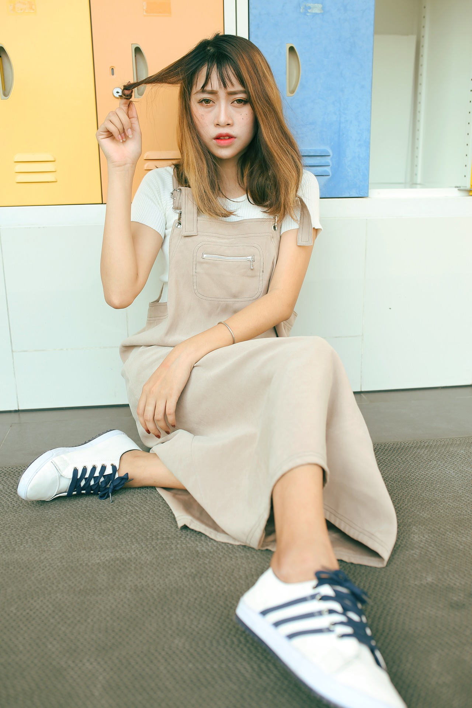
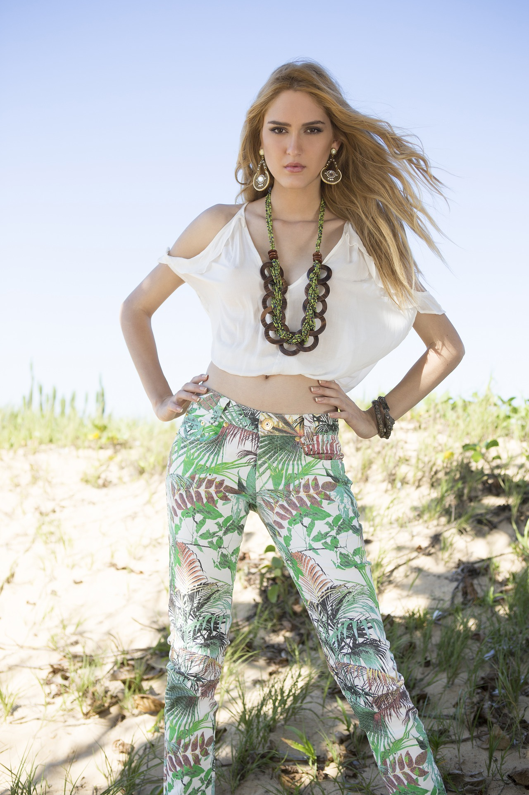
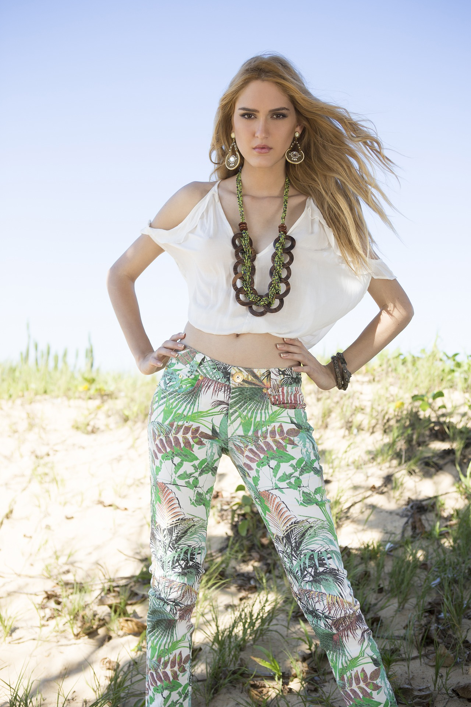

Fashion News in Motions
Statement Tee's
This look is inspired by high end fashion. As i said before everday fashion is influenced by high end fashion in small doses. The bold red tee along side the washed-out denimn shorts allow the bright red to stand out more. The red tee cold be accumpanied with a red lip but instead it is accessorised with the sunglasses.
  

Dressy Casual
Biker Chic
This outfit is very bold, the ripped jeans, black leather jacket and striking wine lips. Its an amazing outfit and could be put together easily. You could find all these in nearly every clothing store.